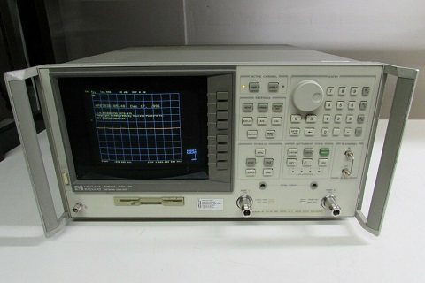
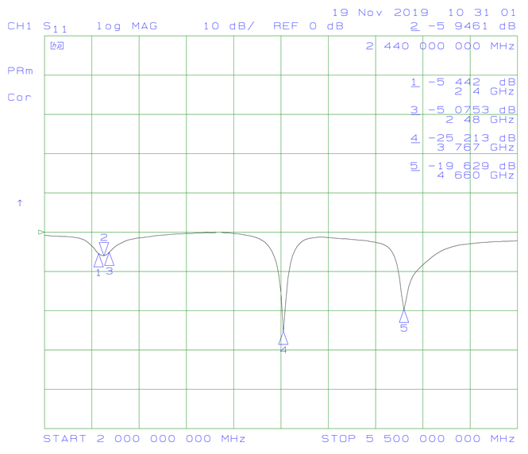

Journal
Saving Data From An Old HP VNA
December 12, 2020
At a previous job we had on old vector network analyzer. I don't remember the exact part number, but it was similar to the HP 8753D.
HP 8753-D (picture from ebay)
It was fairly old, but like most old RF equipment it was built to last. (Although I think there's some selection bias in that statement.) We used it for trimming the length of antennas until they were resonant in the 2.4 GHz ISM band. In other words, "make the antenna shorter until the S11 valley was centred at 2.44 GHz". The final length was recorded and the antenna design was changed in the next PCB release.
Unfortunately the VNA was so old that it didn't have a USB port or any other easy way to save data. An antenna would be tuned, but the only data that was saved was the final antenna length. Things like resonant frequency, bandwidth, or input impedance were lost.
What the VNA did have was a floppy disk drive. I found some floppy disks burried in storage and borrowed our greybeard tech's USB floppy disk reader. The VNA mas meant to output to a plotter, a device that's basically a CNC machine holding a pen. Here's a video showing one in action. This meant that the VNA could output HPGL (Hewlett-Packard Graphics Language) files to the floppy disk. HPGL is kind of interesting because it's pretty human readable. The commands are all abbreviations of their names, unlike G-code. Here's a handy reference guide.
So with the floppy reader I was able to get plotter output from the VNA onto my computer. But how to render it? I tried a few different programs, both installed and online, and the most useful one was HP-GL Viewer, which is maintained by CERN. After tweaking the output a bit I was able to print to PDF and then convert to an image. The end result is shown below. Markers are used to record important numerical values.
This method produces plots that are the same size, so you can flip through a folder of them in an image viewer and the plot axis won't move. This makes it easy to compare different outputs.
One cool thing about the HPGL output is that the section of code that draws the data line is a series of goto commands for the pen. It's a bunch of x,y coordinates that can easily be cleaned up in a spreadsheet, then input into a plotting program like Graph. The data is in "plotter units" instead of frequency and dB, but you can use the marker values to scale it if you want. Although if you're going to go to all that effort, you'll probably just want to poke around the VNA until you find the export data command.
An Old Joke
November 3, 2020
A horse walks into a bar. The bartender says "Why the long face?" The horse says "I've just realized I'm a metaphysical concept within a fictional narrative, and will cease to exist at the end of this sentence."
Bit Specific Addressing
October 15, 2020
The standard way to write to a microcontroller's GPIO output is to perform a read-modify-write operation on the port's data register. It's necessary to use a mask to modify the read value to ensure that the state of any non-target GPIO isn't inadvertantly changed. The downside of this method is that it ties up the bus for several clock cycles. Ideally you would be able to write directly to specific bits in the register individually and only preform one operation instead of three.
This problem can be solved using set-only and reset-only registers, but there is another way called "bit specific addressing" that the TM4C uses. The address itself is used as a mask. A base address is defined for each port, and then specific bits are set for each GPIO you want to be able to affect. For example, the base address for port A is 0x40004000. In order to set PA0 high without affecting the other port A pins, you would write 0x1 to address 0x40004004. To set PA2 you write 0x4 to 0x40004010. Since specific address bits are assigned to each GPIO, you can combine them. In order to set PA0 and PA2 at the same time, you would write 0x5 to 0x40004014.
This method does require 256 addresses for each port in order to write to each combination of port pins, but in a system with billions of addresses this isn't too large of a cost.
For more information, see Section 10.2.1.2 of the TM4C123GH6PM datasheet.
October 12, 2020
My favorite email I've received was from a client. It reads as follows:
I'M AVAILABLE, BUT THIS MEETING ONLY MAKES SENSE IF (nAME) IS ALSO. XCUSE CAPS.. TOO LAZY TO RETYPE
I like how when he realized his mistake, he didn't turn caps lock off but instead fully committed.
Buck Converter Theory
October 8, 2020
A friend linked me to a really good website for buck converters theory: On My PhD. There's a bunch of other EE topics as well.
Moog Transistor Ladder Analysis
October 3, 2020
I found what looks like a rigorous analysis of the transistor ladder filter by Timothy E. Stinchcombe. It will be useful when I make a VCF for my synth.
Feedback on the KiCad Page Layout Editor
October 2, 2020
I no longer have access to Altium through work, so I'm learning KiCad (v5.1.6). I just made a custom title block and found the interface was awkward. However, given how rare it is to make a new title block, all the things mentioned here are probably low priority.
To place a line, I have to go into a menu to select "place a line", then type in the end point coordinates. The coordinate fields are in the order: Y start, X start, X end, Y end. It would be easier if X was always first. These values are only important in a relative sense because after clicking OK it takes me to the main screen where I can move the line around with the mouse. Why not just let me optionally specify a length or width?
After the line was placed, there was an error with the coordinates. I would place something at (50,75) and it would show in the properties window as something like (50.007,75.003). Not a big deal, but why is this even a thing?
If I want to place a line, there should be either a toolbar button or a hotkey listed in the Place menu. To actually place the line, I should be able to click two places on the screen to place the line end points.
It's hard to move line end points once they exist. I can't drag individual end points and have to instead edit the coordinate fields manually (which are thankfully in a sensible order).
The default move command seems to be to drag to select the thing you want to move. There was a case where I wanted to move two text objects, but not the line between them. I had to move the line as well then move it back because there's no concept of shift clicking to select multiple things.
There's also no way to have nothing selected. This isn't an actual issue, just a bit annoying.
In the design panel, it lists all the entities (like lines, text, ect.). However, it just lists them by "text11:Text" or "segm8:Line" I have to click through each one if I want to find something. I also can't drag them to change the order or sort by entity type. It would be nice if, at least for text, it listed the first few characters in the text string.
You can only select already existing lines by clicking on the endpoint, not anywhere on the line. if two lines have the same end point, a window pops up asking which one of the two you want, but the names you have to select from aren't helpful. I have no idea if the line I want is line 11 or 15.
One neat feature is that you can select the origin location for line end point coordinates, so you can have the bottom left be (0,0) if you want (as opposed to the KiCad standard upper left).
Each line also has an intrinsic repeat/patterning option, which was something of a saving grace.
The process of saving a template file and loading it into a schematic was very intuitive. However, I made a change to the template, saved it, and tried to reload it into the schematic, which didn't change. I'm guessing it saw that the file path didn't change, so it didn't reload the template.
SnapEDA Plugins for ECAD
October 1, 2020
SnapEDA just sent me a newsletter about their (beta) plugins for Altium and KiCAD. I haven't tried them yet, but they sound like they could be really useful for easily importing 3D models.
Mechanical Parts from Haizol
September 8, 2020
I recently became aware of Haizol. It's a website that lets you upload mechanical designs for multiple factories in China to bid on. Most production processes are covered. They do seem to have minimum order quantities since most of the RFQs are for thousands of parts, but I did see a few that were for a couple hundred. I guess it depends on what factories are willing to bid on.
Electrostatic Force Field
July 26, 2020
I came across this interesting account of an "Invisible Electrostatic Wall". Apparently a tape factory built up so much static charge from unrolling giant tape reels that it stopped workers from walking under the tape.
Electric Machine Theory
May 31, 2020
Dr. Andy Knight maintains a website that covers electric machines. It's pretty rigorous.
Electron Microscope Animations
February 23, 2020
I'm always impressed with what Ben from Applied Science is able to do. In this video he uses an electron microscope to make animations of carbon nanotubes.